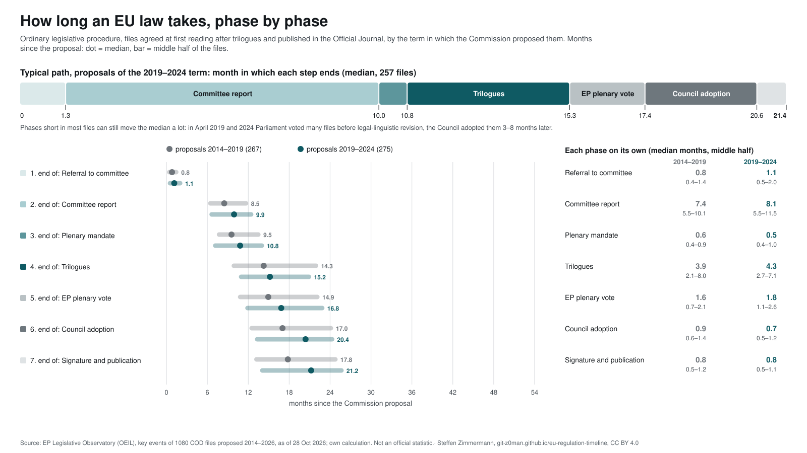
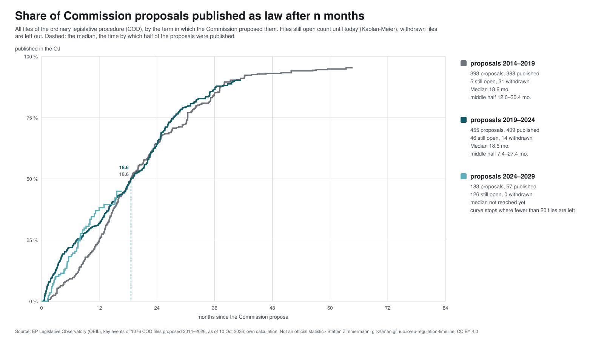

Forecast
When will it be law? For each of the 12 open procedures we follow and the announced European Product Act, the likely date of publication in the Official Journal: from how long comparable EU laws took, from the step each file has reached, and from the calendar ahead, with six Council Presidencies and the European elections of 2029.
Official Journal: likely dates
| Act | Where it stands | Official Journal, median | Half of the runs | Eight in ten | Before the 2029 elections |
|---|---|---|---|---|---|
| Omnibus IV – Digitalisation and common specifications (Directive) | provisionally agreed since 14 Jul 2026 | Dec 2026 | Dec 2026 – Jan 2027 | Dec 2026 – Feb 2027 | 100 % |
| Omnibus IV – Digitalisation and common specifications (Regulation) | provisionally agreed since 14 Jul 2026 | Dec 2026 | Dec 2026 – Dec 2026 | Dec 2026 – Feb 2027 | 100 % |
| NIS-2 amendment | referred to committee since 25 Mar 2026 | Dec 2027 | Aug 2027 – Aug 2028 | May 2027 – Dec 2029 | 89 % |
| Digital Omnibus | referred to committee since 19 Jan 2026 | Mar 2028 | Nov 2027 – Nov 2028 | Aug 2027 – Jul 2030 | 83 % |
| Industrial Accelerator Act | referred to committee since 30 Apr 2026 | May 2028 | Nov 2027 – Nov 2028 | Aug 2027 – Jul 2030 | 83 % |
| MDR/IVDR simplification | referred to committee since 25 Mar 2026 | May 2028 | Nov 2027 – Oct 2028 | Aug 2027 – Jun 2030 | 85 % |
| Cybersecurity Act 2 | referred to committee since 25 Mar 2026 | May 2028 | Nov 2027 – Oct 2028 | Aug 2027 – Jun 2030 | 85 % |
| EU Space Act | referred to committee since 8 Sep 2025 | May 2028 | Nov 2027 – Feb 2029 | Oct 2027 – Dec 2030 | 75 % |
| European Product Act | proposal assumed Dec 2026 | Aug 2028 | Jan 2028 – Oct 2029 | Sep 2027 – Oct 2030 | 72 % |
| New Standardisation Regulation | proposal since 6 Oct 2026 | Sep 2028 | Apr 2028 – Oct 2029 | Nov 2027 – Nov 2030 | 74 % |
| Chips Act 2.0 | referred to committee since 14 Sep 2026 | Sep 2028 | Mar 2028 – Mar 2029 | Oct 2027 – Aug 2030 | 79 % |
| Cloud and AI Development Act | referred to committee since 17 Sep 2026 | Sep 2028 | Mar 2028 – Mar 2029 | Oct 2027 – Aug 2030 | 79 % |
| Public Procurement Act | proposal since 9 Sep 2026 | Dec 2028 | Jun 2028 – Nov 2029 | Jan 2028 – Dec 2031 | 71 % |
What comparable laws took
Months from the Commission proposal to the Official Journal, for the 18 adopted acts we follow (EP Legislative Observatory). Of all 827 files with trilogues since 2012, 25 % were published within 14 months; of the acts we follow, 2, both targeted amendments (Digital Omnibus on AI, Reg. 2022/2480).
Show the acts as a table
| Act | Proposal | Official Journal | Months | Crossed the election break |
|---|---|---|---|---|
| Digital Omnibus on AI | Nov 2025 | Jul 2026 | 8 | |
| Reg. 2022/2480 | Feb 2022 | Dec 2022 | 10 | |
| Net Zero Industry Act | Mar 2023 | Jun 2024 | 16 | yes |
| Market Surveillance Regulation | Dec 2017 | Jun 2019 | 18 | yes |
| Cybersecurity Act | Sep 2017 | Jun 2019 | 21 | yes |
| CSA amendment 2025/37 | Apr 2023 | Jan 2025 | 21 | yes |
| Cyber Solidarity Act | Apr 2023 | Jan 2025 | 21 | yes |
| General Product Safety Regulation | Jun 2021 | May 2023 | 23 | |
| NIS 2 Directive | Dec 2020 | Dec 2022 | 24 | |
| Internal Market Emergency and Resilience Act | Sep 2022 | Nov 2024 | 26 | yes |
| IMERA omnibus | Sep 2022 | Nov 2024 | 26 | yes |
| Product Liability Directive | Sep 2022 | Nov 2024 | 26 | yes |
| Cyber Resilience Act | Sep 2022 | Nov 2024 | 26 | yes |
| Machinery Regulation | Apr 2021 | Jun 2023 | 26 | |
| Ecodesign for Sustainable Products Regulation | Mar 2022 | Jun 2024 | 27 | yes |
| Toy Safety Regulation | Jul 2023 | Dec 2025 | 28 | yes |
| European Health Data Space Regulation | May 2022 | Mar 2025 | 34 | yes |
| AI Act | Apr 2021 | Jul 2024 | 39 | yes |
European Product Act: two possible structures
The European Product Act has not been proposed yet. Two structures are possible; the forecast covers both.
Forecast for the European Product Act · Product laws under the New Legislative Framework: which files change them in parallel
How long EU laws take
The history behind the forecast: every file of the ordinary legislative procedure since 2012 in the European Parliament's Legislative Observatory.
How long an EU law takes, phase by phase
Files agreed at first reading after trilogues, by the term in which the Commission proposed them: the typical path and each phase on its own (median and middle half).

Download: PNG · PDF · German (PNG)


Share of proposals published as law after n months
All files of the ordinary legislative procedure by term of the proposal; files still open count until today (Kaplan-Meier).

Download: PNG · PDF · German (PNG)


How the forecast works
Comparable laws. The European Parliament's Legislative Observatory lists the key events of every file of the ordinary legislative procedure. We take all 1005 files proposed since 2012 that were negotiated in trilogues (files withdrawn or adopted without negotiations are left out; before about 2015 the Observatory did not record trilogues, so a first reading whose plenary vote came more than 60 days after the committee vote counts as negotiated, unless it is a codification or an urgent procedure) and measure how long each step took: committee vote, start of trilogues, provisional agreement, Parliament's vote, Council adoption, Official Journal.
Of similar size. Large laws take longer: of the files since 2012, the largest quarter by size took about twice as long as the smallest (median 28 against 14 months of working time). We count the words of legal text in each Commission proposal (recitals, articles and annexes, in the English text in EUR-Lex; 972 of the 1005 files measured) and compare a file with the 40 % of comparable files nearest to it in size. A law not proposed yet, or whose proposal could not be measured yet, is compared with files of every size.
From where a file stands. For each open file we take the comparable files of similar size that reached the same step and had not moved on after as long as this file has waited. If fewer than 40 files of similar size have waited as long, files of every size count; the condition on the time waited is always kept. Files that are still open are continued with a published file that took at least as long. 4,000 runs per file give the median, the middle half and the range of eight in ten.
Calendar. Parliament does no legislative work between its last session before the European elections and the autumn, when its new committees vote again. We take these breaks of 2014, 2019 and 2024 out of the measured durations and put the break of 2029 into the forecast: a step that would fall into it moves to its end. The 2029 election dates are not set yet; we assume the calendar of 2024. Council Presidencies: Council Decision (EU) 2016/1316.
Track record. We forecast every file proposed in 2016-2021 (426 files) from the day of its proposal, with only what was known on that day. The real publication date fell in the middle half of the forecast for 48 % of the files (expected: 50 %) and in the eight-in-ten range for 80 % (expected: 80 %); the median missed by 6.9 months for the typical file. With all comparable files regardless of size, the method until 13 October 2026: 50 % in the middle half, 83 % in the eight-in-ten range, median error 8.2 months (the forecast as it was). Until 14 October 2026 a file adopted at first reading counted as negotiated only when a trilogue was recorded, which left out many negotiated files of 2012 to 2014; with them the median error fell from 7.6 to 6.9 months (the forecast as it was).
What it does not know. Political priority, a deal between the institutions or a new crisis: urgent files can be much faster. We also tested the consultations on "Have your say", the State of the Union address, the rapporteur's political group and the density of the wording: none showed a clear link with the durations once the size is taken into account. Sources: EP Legislative Observatory, the Commission proposals in EUR-Lex, the procedure registers on our procedure pages, Council Decision (EU) 2016/1316.
Our own assessment from public sources, CC BY 4.0. Data of 14 Oct 2026. It describes how long comparable laws took; it does not say what the institutions will decide.